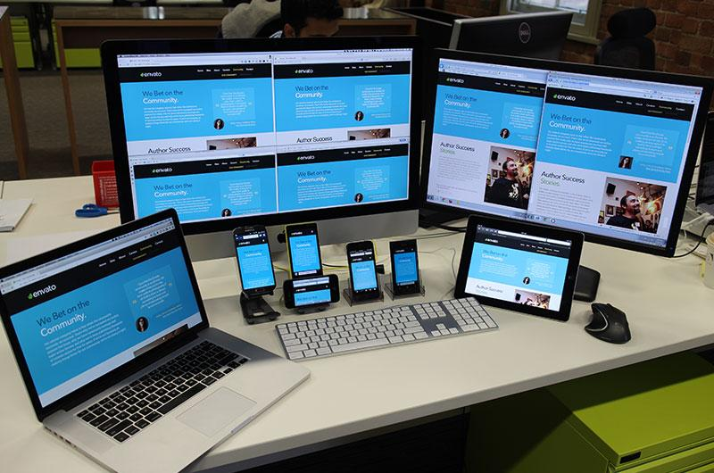

Prilikom testiranja između uređaja, pretraživača i operativnih sistema, presudno je da se tester može prebacivati između iteracija, bilo da je između prozora pregledača na jednoj mašini ili između više mašina. Alati kao što je Ghostlab su veoma korisni ovde, jer vam omogućavaju da preduzmete akcije na jednoj iteraciji i da ih ponovite na mnoge. Na primer, samo jednim pregledačem Chrome-a, tester može da kontroliše istu veb lokaciju u Firefox-u na istom računaru, Safari na Mac-u, Chrome na Android telefonu, Safari na iPhone-u, IE na WindoWs telefonu ili na bilo kom drugom uređaju.To znači da mogu jednom da prođu kroz lokaciju i da ga pregledaju na više uređaja, u različitim konfiguracijama, sve u isto vreme. Sa minimalnom konfiguracijom, ovo može uštedeti sate nepotrebnog unakrsnog testiranja pretraživača
"To an optimist,the glass is half full. To a pessimist, the glass is half empty. To a good tester, the glass is twice as big as it needs to be."
“Testing is a skill. While this may come as a surprise to some people it is a simple fact.”
“It’s hard enough to find an error in your code when you’re looking for it.It’s even harder when you’ve assumed your code is error-free.”